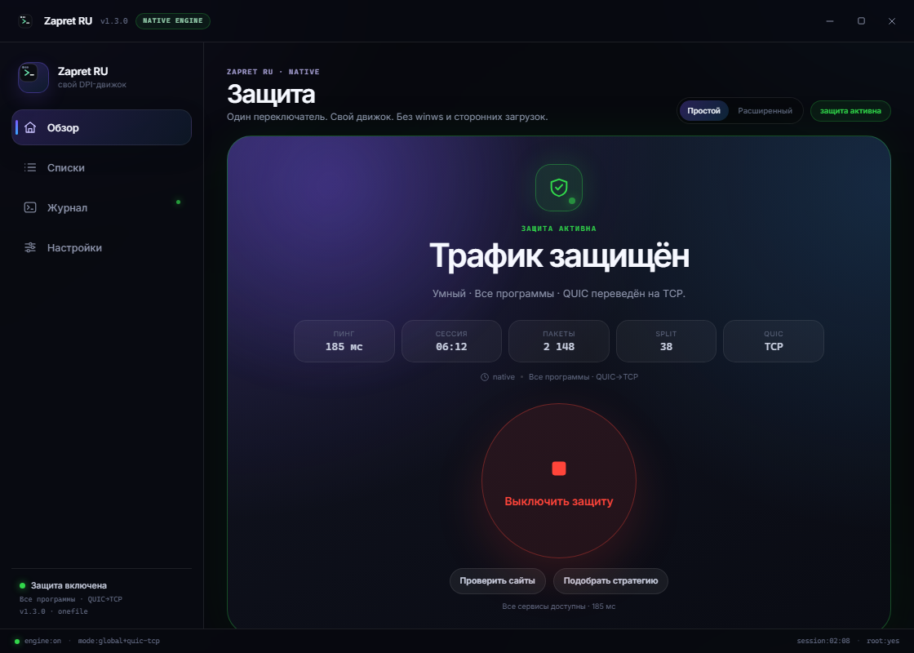

Обход DPI
без winws.
Один exe со своим WinDivert-движком: SNI split, QUIC → TCP и автоподбор. Большое окно, минимум кнопок, никакой рекламы и телеметрии.

Что внутри
Не обёртка над чужим winws. Собственный движок и собственный интерфейс.
Режет TLS ClientHello внутри имени сайта, чтобы DPI не прочитал SNI из первого сегмента.
Отключает UDP 443, и браузеры переходят на TCP, где разрез работает стабильнее.
Перехват на уровне ОС: браузеры, Electron, лаунчеры и другие TCP-приложения.
Проверяет профили по YouTube, Discord и Cloudflare и оставляет лучший.
Старт, середина и конец SNI плюс фиксированные split 1/2/4. Для разных DPI.
Одна круглая кнопка, пинг и статистика. Профили — в расширенном режиме.
PyDivert и подписанный WinDivert уже внутри. Ничего не скачивается при запуске.
Только локальная статистика. Нет аккаунтов, рекламы и фоновых отчётов.
Как запустить
Три шага, без папки bin и сторонних файлов.
Возьмите ZapretRU.exe из последнего GitHub Release.
WinDivert — драйвер перехвата пакетов, ему нужны права администратора.
Нажмите одну кнопку. Если сайт не открылся — запустите автоподбор.
Честно: 100% на всех провайдерах не бывает. Блокировки по IP, DNS, ECH и UDP-протоколы требуют отдельных мер. Автоподбор — лучший практический результат, а не магическая гарантия.
Частые вопросы
Это VPN или прокси?
Нет. Трафик не идёт через чужие серверы. Движок меняет сегментацию TCP на вашем ПК, поэтому пинг не растёт из-за плеча маршрутизации.
Нужен ли zapret или winws.exe?
Нет. Zapret RU 1.3.0 содержит собственный движок и встроенный WinDivert. Папка bin не нужна.
Почему SmartScreen предупреждает?
Сборка не подписана сертификатом Authenticode, а драйвер перехвата пакетов часто вызывает вопросы антивирусов. Проверяйте SHA-256 из релиза.
Работает ли голос Discord и игры?
Движок оптимизирован для TCP-сайтов и приложений. UDP 443 блокируется для перехода на TCP; голосовые UDP-порты остаются без изменений и могут требовать отдельных мер.
Собирается ли проект локально?
Да. Нужны Python 3.11+, Node для проверки JS и Nuitka. Команда: build.bat. Инструкция — в README.